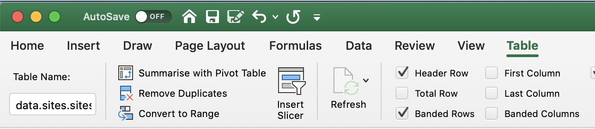
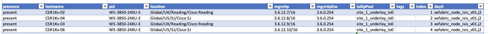

Introduction
The sdtables module is intended to be consumed by other projects to prevent the need to keep rewriting data ingestion methods. Pull Requests are welcome!
When working with APIs it can be useful to use Excel or HTML tables in Wikis to collect and store data with different schemas. sdtables allows to define your schema using JSON schema and auto-build an Excel sheet the respective schema build as tables using some of Excels data validation features. It also allows you to easily ingest data back into your scripts with minimal effort.
Example Usage
Data Ingestion
sdtables will search an Excel workbook for data defined as tables. To define a table in Excel do Insert => Table. A table in Excel is essentially a named range of cells. It is assumed that the first row of the table contains column headers which will be used as the keys for the data in the proceeding rows;


Note that the table name in Excel is globally unique for that workbook. The following code snippet will load a workbook called example_parse_xlsx.xlsx and dump the content out in YAML format.
import sdtables
import yaml
excel_tables_db = 'example_parse_xlsx.xlsx'
excel_to_dict = sdtables.load_xl_db(excel_tables_db)
print(yaml.dump(excel_to_dict))
Excel Table Schema
JSON schema is a standards based way to describe the structure and validation constraints of your data. Using JSON schema definition sdtables can auto-generate an Excel workbook containing tables representing your schema and leveraging some of Excels data validation features (E.g. enum for a list of possible values, boolean for TRUE and FLASE and even cross tables references using a custom extension tref.
Along with your schema you can also provide example rows of data to populate your table to guide your users. When loading the example data, sdtables will also try to validate it against your schema and show warnings for any validation failures. If no example data is provided sdtables will insert a single empty row with data validation in correct columns.
Below is an example JSON schema used to define a table;
properties:
presence:
type: string
enum: ['present', 'absent']
type:
type: string
enum: ['area', 'building', 'floor']
name:
type: string
parentName:
type: string
latitude:
type: number
longitude:
type: number
street:
type: string
city:
type: string
country:
type: string
rfModel:
type: string
enum: ['Cubes And Walled Offices', 'Drywall Office Only', 'Indoor High Ceiling', 'Outdoor Open Space']
and here are some example rows of data;
sites:
- {'name': 'United States', 'parentName': 'Global', 'presence': 'present', 'type': a'}
- {'name': 'New York', 'parentName': 'Global/United States', 'presence': 'present', 'type': 'area'}
- {'name': 'Empire State', 'parentName': 'Global/United States/New York', 'presence': 'present', 'type': 'area'}
The following code will create a new workbook text.xlsx based on this schema and example input data;
import sdtables
import yaml
from openpyxl import Workbook
wb = Workbook()
ws = wb.active
yaml_schema = """
module:
name: sites
methods:
- create
- delete
- delete_all
schemas:
sites:
properties:
presence:
type: string
enum: ['present', 'absent']
type:
type: string
enum:
- area
- building
- floor
name:
type: string
parentName:
type: string
latitude:
type: number
longitude:
type: number
street:
type: string
city:
type: string
country:
type: string
rfModel:
type: string
enum: [
'Cubes And Walled Offices',
'Drywall Office Only',
'Indoor High Ceiling',
'Outdoor Open Space'
]
data:
sites:
- {"presence": "present", "type": "area", "name": "United States", "parentName": "Global", "rfModel": "Cubes And Walled Offices"}
- {"presence": "present", "type": "area2", "name": "United States", "parentName": "Global", "rfModel": "Cubes And Walled Offices"}
- {"presence": "present", "type": "area3", "name": "United States", "parentName": "Global", "rfModel": "Cubes And Walled Offices"}
"""
dict_schema = yaml.load(yaml_schema, Loader=yaml.SafeLoader)
name = '{}.{}.{}'.format('data', 'sites', 'sites')
schema = dict_schema['module']['schemas']['sites']
data = dict_schema['module']['data']['sites']
sdtables.add_schema_table_to_worksheet(ws, name, schema, data=data, table_style='TableStyleMedium2')
wb.save('test.xlsx')
Note that the above example data has schema validation errors to demonstrate the validation functionality.
Excel Table Data
Similar to the above, we can use sdtables to simply create a table and populate with the provided rows of data. The first row of the data should contain an empty row with all the keys that should represent each column.
import sdtables
from openpyxl import Workbook
wb = Workbook()
ws = wb.active
name = "sites"
data = [
{"presence": "present", "type": "area", "name": "United States", "parentName": "Global", "rfModel": "Cubes And Walled Offices"},
{"presence": "present", "type": "area2", "name": "United States", "parentName": "Global", "rfModel": "Cubes And Walled Offices"},
{"presence": "present", "type": "area3", "name": "United States", "parentName": "Global", "rfModel": "Cubes And Walled Offices"}
]
headers = {
"presence": "",
"type": "",
"name": "",
"parentName": "",
"latitude": "",
"longitude": "",
"street": "",
"city": "",
"country": "",
"rfModel": ""
}
data.insert(0, headers)
sdtables.add_table_to_worksheet(ws, 'dataTable1', data, first_row_is_header=True, table_style='TableStyleMedium2')
wb.save('test.xlsx')
See also example_create_tables_from_schema
Dump to Excel
Uses the same format of structured data exported from "Data Ingestion" use case to create a complete Excel workbook.
import sdtables
data = {
'MY_NEW_WS1': {
'my_new_table': [
{'Column1': 'data1', 'Column2': 'thing1', 'Column3': 'this1', 'Column4': 'that1', 'Column5': 'other1', 'Column6': None, 'Column7': None, 'Column8': None, 'Column9': None, 'Column10': None, 'Column11': None, 'Column12': None, 'Column13': None, 'Column14': None, 'Column15': None},
{'Column1': 'data2', 'Column2': 'thing2', 'Column3': 'this2', 'Column4': 'that2', 'Column5': 'other2', 'Column6': None, 'Column7': None, 'Column8': None, 'Column9': None, 'Column10': None, 'Column11': None, 'Column12': None, 'Column13': None, 'Column14': None, 'Column15': None},
{'Column1': 'data3', 'Column2': 'thing3', 'Column3': 'this3', 'Column4': 'that3', 'Column5': 'other3', 'Column6': None, 'Column7': None, 'Column8': None, 'Column9': None, 'Column10': None, 'Column11': None, 'Column12': None, 'Column13': None, 'Column14': None, 'Column15': None},
{'Column1': 'data4', 'Column2': 'thing4', 'Column3': 'this4', 'Column4': 'that4', 'Column5': 'other4', 'Column6': None, 'Column7': None, 'Column8': None, 'Column9': None, 'Column10': None, 'Column11': None, 'Column12': None, 'Column13': None, 'Column14': None, 'Column15': None}
]
}
}
db_file_name = 'test_me.xlsx'
sdtables.dump_db_to_xl(db_file_name, data, table_style='TableStyleMedium2', row_offset=1, col_offset=0)